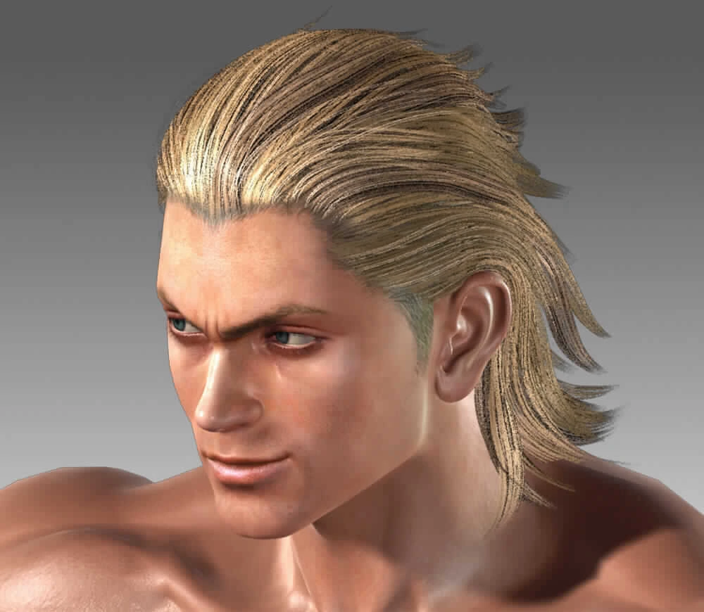
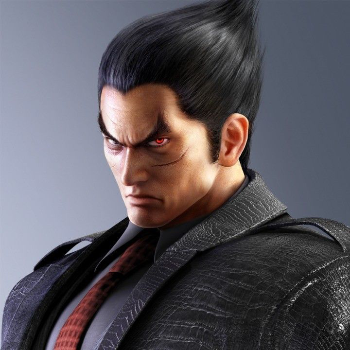
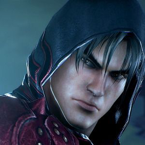
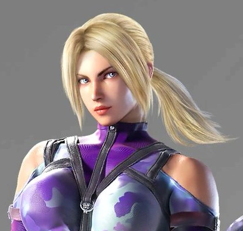
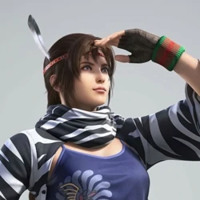

Steve
Steve was a young British boxer enjoying his run as
the middleweight champion of the world. Adopted during infancy,
Steve sought the identity of his biological parents, as well as
the origin of the scar on his arm.
Steve entered The King of Iron Fist Tournament 4 to
show off his strength to the world and find out where he came
from. With the help of Lei Wulong, he learned the secret of his
birth. Having made a comeback as the world champion, Steve
immediately decided to enter the next tournament
- 

- 
- 


- 
- 